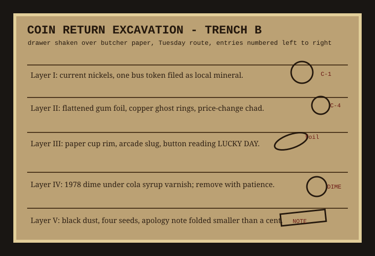

Method: remove return cup, shake over butcher paper, sort by dirt horizon. Do not wash until after notes are made. Washing makes every decade look like 1994.

| Find | Condition | Useful reading |
|---|---|---|
| bus token | green edge, no local transit match | used as a dime until coin mech learned suspicion |
| gum foil | creased into a shim | probably held the reject lever open during summer swelling |
| 1978 dime | cola varnish, black reverse | sat under syrup long enough to become furniture |
| apology note | folded smaller than a cent | sorry row c, no signature |
The return cup is the machine's public archive. People put hope in the slot and receive either sugar or evidence.